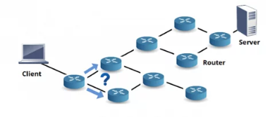

Método de conexión que utiliza cables físicos para transmitir datos entre dispositivos. Este ofrece conexiones estables y seguras con velocidades altas y bajas latencias. Algunos ejemplos incluyen conexiones Ethernet y USB.

A continuación encontrarás las definiciones de las principales palabras y expresiones relacionadas con la asignatura de Sistemas Operativos
Método de conexión que utiliza cables físicos para transmitir datos entre dispositivos. Este ofrece conexiones estables y seguras con velocidades altas y bajas latencias. Algunos ejemplos incluyen conexiones Ethernet y USB.
Es la capacidad de una conexión de red para transmitir datos en un periodo determinado. Se mide en bits por segundo (bps) y afecta la velocidad y calidad de la transmisión. O sea, un mayor ancho de banda permite transferencias de datos más rápidas.

Es un programa informático diseñado como una herramienta para realizar operaciones o funciones específicas. Generalmente, son diseñadas para facilitar ciertas tareas complejas y hacer más sencilla la experiencia informática de las personas.

Fue la primera red de computadoras descentralizada pionera en la comunicación entre sistemas distantes mediante conmutación de paquetes sentando así los cimientos de la evolución de internet.

(American Standard Code for Information Interchange) Código de caracteres estándar utilizado para representar texto en computadoras y dispositivos de comunicación. ASCII define un conjunto de 128 caracteres, incluyendo letras, números y símbolos, que permiten la interoperabilidad entre diferentes sistemas y dispositivos.

Una estructura física que proporciona soporte para equipos de red, como switches, routers, o equipos de montaje en rack.

Es una tecnología inalámbrica de corto alcance que conecta dispositivos como auriculares, teclados y ratones. Este opera en la banda de 2.4 GHz y permite la comunicación entre dispositivos cercanos.

Es el medio físico utilizado para transmitir datos, energía o información entre dispositivos o redes. Puede ser de diversos tipos como UTP, coaxial o fibra óptica. Cada tipo tiene diferentes características de velocidad, alcance y calidad de conexión.

Es un tipo de cable que se usa para transmitir señales de televisión e internet. Tiene un núcleo de cobre, un aislamiento, una capa de metal para proteger contra interferencias, y una cubierta exterior.

Es un cable de par trenzado sin blindaje, utilizado principalmente en redes Ethernet para conectar dispositivos. Este tiene cuatro pares de cables trenzados que ayudan a reducir la interferencia.

Un conducto utilizado para ocultar y proteger cables de red y otros cables eléctricos.

Proceso de convertir datos en un formato específico para su almacenamiento, transmisión o procesamiento. La codificación puede referirse a la compresión de datos, la conversión de texto a formatos de bits, o la aplicación de algoritmos para asegurar la integridad de los datos durante la transferencia.

Dispositivo electrónico que procesa datos y realiza tareas según las instrucciones proporcionadas por un software o programa. Las computadoras pueden actuar como clientes, servidores o nodos intermedios, participando en la transferencia y el procesamiento de información.

Capacidad de los sistemas, dispositivos o redes de comunicarse entre sí y compartir recursos. La conectividad en redes se refiere a la capacidad de los nodos para establecer enlaces de comunicación, permitiendo el intercambio de datos y la utilización de servicios de red.

En redes, se refiere al proceso de dirigir datos desde su origen hasta su destino a través de dispositivos como switches o routers.

Es un programa de software que indica al sistema operativo de su computadora cómo comunicarse con una determinada pieza de hardware.

Una herramienta utilizada para conectar conectores a los extremos de los cables de red, asegurando una conexión segura y estable.

Red francesa precursora de Internet.

Conjunto de valores o información en bruto que pueden ser procesados o analizados para obtener información útil. En redes, los datos pueden incluir texto, imágenes, audio, video y otros tipos de información digital que se transmiten entre dispositivos.

Es un identificador único que se asigna a cada dispositivo de red, como un teléfono, computadora o impresora, cuando es fabricada. Y esta se utiliza para identificar de manera específica a cada dispositivo en una red local.

Se refiere al sistema de asignación de identificadores únicos a cada dispositivo o nodo en una red para permitir su identificación y comunicación. Las direcciones más comunes son las direcciones IP que pueden ser IPv4 o IPv6, y las direcciones MAC que son únicas para cada interfaz de red.

Sistema de Nombres de Dominio o DNS es un sistema que traduce nombres de dominio legibles para los humanos (como "ejemplo.com") en direcciones IP numéricas utilizadas por las computadoras para localizar recursos en una red, como servidores web y correos electrónicos.

Es la condición o cualidad de ser duplicado. En un contexto mas corto se refiere simplemente a la acción de duplicar algo o la existencia de 2 elementos similares.

Modo de comunicación que permite la transmisión bidireccional de datos simultáneamente. Hay dos tipos: half-duplex (en una dirección a la vez) y full-duplex (en ambas direcciones a la vez). Permite una comunicación más eficiente y fluida entre dispositivos.

En el contexto de computación, ejecutar se refiere al proceso de llevar a cabo las instrucciones de un programa o script en una computadora. Esto implica la realización de operaciones específicas, como cálculos, manipulación de datos y control de dispositivos, según lo definido por el código del programa.

Transmitir algo por medio de ondas electromagnéticas. Dar o manifestar, por escrito o de viva voz, un juicio, un dictamen o una opinión.

En un acto de comunicación, persona que enuncia el mensaje. Aparato productor de las ondas electromagnéticas emitidas por una emisora.

Proceso de convertir datos en un código cifrado para evitar que sean leídos por personas no autorizadas. La encriptación utiliza algoritmos matemáticos para convertir datos legibles en un formato que solo puede ser descifrado por alguien que tenga la clave correcta, asegurando la privacidad y seguridad de la información.

Es el proceso de enviar paquetes de datos a través de una red desde el origen hasta el destino utilizando la ruta más eficiente disponible. Los routers y otros dispositivos de red son responsables de tomar decisiones de enrutamiento basadas en la dirección IP de destino de los paquetes.
Tecnología de red de área local (LAN) que conecta dispositivos mediante cables, como UTP o fibra óptica. Ofrece conexiones rápidas y confiables, y es ampliamente utilizada en entornos domésticos y empresariales.

Es un medio físico de transmisión de información, usual en redes de datos y telecomunicaciones, que consiste en un filamento delgado de vidrio o de plástico, a través del cual viajan pulsos de luz láser o led, en la cual se contienen los datos a transmitir.

Es un sistema de seguridad de red que monitorea y controla el tráfico entrante y saliente en una red, permitiendo o bloqueando el acceso a los recursos basándose en un conjunto de reglas predefinidas.

(File Transfer Protocol) Protocolo estándar de la red utilizado para la transferencia de archivos entre un cliente y un servidor. FTP permite a los usuarios subir, descargar, mover, renombrar y eliminar archivos en un servidor remoto.

Número de veces que se repite un proceso periódico por unidad de tiempo.

Un mueble o armario utilizado para alojar equipos de red, como servidores, switches, routers, entre otros, proporcionando protección y organización.

Es el proceso de transferir una conexión de una torre de señal móvil a otra para mantener la continuidad de la llamada o conexión de datos. Esta es esencial para la movilidad en redes celulares, como cuando un usuario se mueve mientras realiza una llamada.

Unidad de frecuencia del sistema internacional, que equivale a 1 ciclo por segundo.
.png)
Es el punto de acceso inalámbrico que permite a los dispositivos conectarse a Internet. Puede ser creado por un dispositivo móvil, en lugares públicos o comerciales para ofrecer conexión a los clientes.

Dispositivo de red que conecta múltiples dispositivos, permitiendo que se comuniquen. No discrimina el tráfico, por lo que todos los dispositivos conectados comparten el mismo ancho de banda.

(Hypertext Transfer Protocol) Protocolo de aplicación utilizado para la transmisión de documentos hipermedia, como páginas web, en la World Wide Web. HTTP define cómo los mensajes son formateados y transmitidos, y cómo los servidores y navegadores deben responder a diversas solicitudes.

(Hypertext Transfer Protocol Secure) Versión segura de HTTP que utiliza SSL/TLS para cifrar la comunicación entre el navegador del usuario y el servidor web. HTTPS protege la integridad y la privacidad de los datos intercambiados en la web, asegurando que la información no pueda ser interceptada o modificada por terceros.

(Internet Message Access Protocol) Protocolo de correo electrónico que permite a los clientes acceder a los mensajes almacenados en un servidor de correo y gestionarlos de forma remota. A diferencia de POP3, IMAP permite mantener los correos en el servidor, sincronizando cambios en múltiples dispositivos y facilitando el acceso a los mensajes desde cualquier lugar.

Son dispositivos o conexiones que transmiten datos sin la necesidad de cables físicos. Estos utilizan ondas de radio, microondas u otros métodos para comunicarse entre dispositivos, así permiten mayor movilidad y comodidad a los usuarios.

Conjunto de datos procesados y organizados de tal manera que tienen significado y pueden ser utilizados para tomar decisiones o realizar análisis. La información es el resultado del procesamiento de datos y es esencial para la comunicación eficaz en redes.

Tecnología que utiliza luz infrarroja para transmitir datos entre dispositivos, como los controles remotos de televisores. Tiene un alcance limitado y requiere línea de visión directa entre dispositivos.

Proceso de conectar diferentes sistemas, redes o dispositivos para que puedan comunicarse y trabajar juntos. La interconexión es esencial para la integración de redes y la creación de infraestructuras de comunicación complejas que permiten el intercambio de datos y recursos.

Punto de interacción entre dos sistemas, dispositivos o componentes de software, permitiendo la comunicación y el intercambio de información. Las interfaces pueden ser físicas, como puertos y conectores, o lógicas, como APIs y protocolos de comunicación.

(Internet Service Provider) Proveedor de servicios de Internet. Una empresa que le proporciona acceso a Internet, normalmente a través de una conexión de acceso telefónico, de DSL o de banda ancha.

(Joint Photographic Experts Group) Formato de archivo de imagen que utiliza compresión con pérdida de calidad, lo que reduce el tamaño del archivo a cambio de una ligera pérdida de detalle. JPEG es comúnmente utilizado para fotografías y otras imágenes complejas debido a su eficiencia en la compresión.

(Local Area Network) Es una red de computadoras que cubre un área geográfica limitada, como un edificio, una escuela o una empresa. Las LANs conectan dispositivos dentro de un área cercana, permitiendo la comunicación y el intercambio de recursos, como archivos e impresoras, entre los usuarios de la red.

Es el tiempo que tarda un paquete de datos en viajar desde su origen hasta su destino en una red. Se mide en milisegundos (ms) y puede afectar la velocidad y la eficiencia de la comunicación en línea.

Potente computadora centralizada para procesamiento de datos a gran escala, común en grandes organizaciones.

(Metropolitan Area Network) Es una red de computadoras que abarca una ciudad o una región metropolitana. Las MANs están diseñadas para interconectar diversas LANs dentro de una misma área geográfica, proporcionando una infraestructura de red de alta velocidad y capacidad para organizaciones o comunidades en un área específica.

Es el camino físico entre el transmisor y el receptor. Cualquier medio físico que pueda transportar información en forma de señales electromagnéticas se puede utilizar en las redes de datos como un medio de transmisión.
Se refieren a los canales físicos (como cables de cobre, fibra óptica) o inalámbricos (como ondas de radio, microondas) a través de los cuales se transmiten los datos. Los medios de transmisión determinan la velocidad, la distancia y la calidad de la comunicación en una red.

Un dispositivo que permite conectar múltiples equipos o dispositivos a una sola toma de corriente eléctrica. No es específico de redes, pero puede ser utilizado para conectar varios dispositivos de red.

Es una tecnología que permite el almacenamiento y procesamiento de datos en servidores remotos a través de Internet. Los usuarios pueden acceder a sus datos y aplicaciones desde cualquier lugar con una conexión a Internet.

(Personal Area Network) Es una red de dispositivos interconectados que se utiliza para la comunicación entre dispositivos personales cercanos, como teléfonos móviles, tabletas, computadoras portátiles y dispositivos periféricos. Las PANs suelen tener un alcance de unos pocos metros y utilizan tecnologías como Bluetooth o Wi-Fi para la conexión inalámbrica.

Un panel que contiene puertos de conexión (generalmente RJ45) para cables de red, que facilita la conexión y desconexión ordenada de cables en una red local.

Una herramienta utilizada para eliminar el revestimiento externo de los cables, exponiendo los conductores internos para la conexión a dispositivos de red.

(Portable Network Graphics) Formato de archivo de imagen que utiliza compresión sin pérdida de calidad, lo que significa que no se pierde información de la imagen durante la compresión. PNG es ampliamente utilizado en la web para gráficos que requieren alta calidad y transparencia.

(Post Office Protocol version 3) Es un protocolo utilizado por los clientes de correo electrónico para recuperar mensajes de correo desde un servidor. POP3 descarga los correos electrónicos desde el servidor al cliente de correo en la computadora local y, por lo general, elimina los correos del servidor una vez descargados.

(Point-to-Point Tunneling Protocol) Protocolo de red utilizado para implementar redes privadas virtuales (VPN). PPTP permite la transmisión segura de datos a través de redes públicas, creando un "túnel" cifrado que protege la información durante el tránsito y permite el acceso remoto a redes privadas.

Un protocolo es un conjunto de instrucciones o normas que permite que diferentes dispositivos o sistemas se comuniquen entre sí de forma ordenada y comprensible.

Es un servidor intermediario que actúa como un intermediario entre los clientes y los servidores, permitiendo que los clientes realicen solicitudes a través del proxy y mejorando la seguridad, el rendimiento y la privacidad de la comunicación en línea.

Una estructura metálica diseñada para alojar equipos de red y TI de manera ordenada y compacta. Los racks proporcionan un entorno seguro y organizado para montar y mantener dispositivos como servidores, switches, routers, entre otros, facilitando la administración de cables y la gestión de los equipos.

También llamada red de ordenadores o red informática, es un conjunto de equipos conectados por medio de cables, señales, ondas o cualquier otro método de transporte de datos, que comparten información (archivos), recursos (CD-ROM, impresoras, etc.)

En un acto de comunicación, persona que recibe el mensaje. Aparato utilizado en la recepción de señales electromagnéticas, como en la radiodifusión o la televisión.

Es un dispositivo de red que recibe una señal y la retransmite a un nivel más alto o a través de un área mayor, con el propósito de extender el alcance de la comunicación en una red. Los repetidores se utilizan en redes inalámbricas, de fibra óptica y de cable para amplificar y regenerar las señales.

Es un aparato que dirige o transporta el tráfico de datos entre los dispositivos de la red de internet.

(Remote Procedure Call) Protocolo que permite a un programa ejecutar procedimientos o funciones en otro programa ubicado en una computadora remota. RPC facilita la comunicación entre sistemas distribuidos, permitiendo que las aplicaciones interactúen como si estuvieran en la misma máquina, aunque estén separadas por una red.

Se refiere al componente que capta señales inalámbricas o cableadas y las convierte en información útil, como audio, video o datos digitales.

Se refiere al componente que genera y transmite señales inalámbricas o cableadas, como audio, video o datos digitales, para que sean recibidas por un receptor.
Conexión a Internet que utiliza satélites en órbita para transmitir datos entre usuarios y proveedores de servicios. Es útil en áreas rurales o de difícil acceso, aunque puede presentar mayor latencia.

Forma de transmitir información mediante variaciones continuas en una onda. Es común en la transmisión de audio o video en sistemas antiguos, como la televisión por aire.

(Simple Mail Transfer Protocol) Protocolo utilizado para el envío de correos electrónicos entre servidores de correo y desde clientes de correo a servidores. SMTP es responsable de enrutar y entregar los mensajes de correo electrónico a través de la red, asegurando que lleguen a la bandeja de entrada del destinatario.

(Secure Sockets Layer/Transport Layer Security) Protocolos criptográficos diseñados para proporcionar seguridad en las comunicaciones a través de una red. SSL/TLS aseguran que los datos transmitidos entre un cliente y un servidor estén cifrados y autenticados, protegiendo contra la interceptación y la manipulación.

Flujo continuo de datos transmitidos en tiempo real. En el contexto de redes, "stream" se refiere a la transmisión continua de audio, video u otros datos desde un servidor a un cliente, permitiendo que el contenido se reproduzca a medida que se recibe, en lugar de esperar a que se descargue completamente.

Es una nueva dirección o URL que reemplaza el "www" de tu dominio por la palabra que desees. Por ejemplo, "tienda" en lugar de "www". Un subdominio puede servirte cuando tienes distintos sitios, pero quieres conservar la identidad de tu marca en cada uno.

O conmutador es un dispositivo de interconexión utilizado para conectar equipos en red formando lo que se conoce como una red de área local (LAN) y cuyas especificaciones técnicas siguen el estándar conocido como Ethernet.

Proceso de coordinar la operación de dos o más sistemas o dispositivos para que trabajen en armonía. En redes, la sincronización puede referirse a la actualización de datos entre servidores y clientes, o la coordinación de la transmisión de datos para asegurar que se reciban en el orden correcto.

(Transmission Control Protocol) Protocolo de red que proporciona una transmisión confiable y ordenada de datos entre aplicaciones a través de una red IP. TCP asegura que los datos lleguen a su destino sin errores y en el orden correcto, manejando la retransmisión de paquetes perdidos y el control de flujo.

Proceso de mover datos de un lugar a otro, ya sea dentro de la misma red o entre diferentes redes. La transferencia de datos puede realizarse a través de diversos protocolos y medios, asegurando que la información llegue a su destino de manera eficiente y segura.
(User Datagram Protocol) Protocolo de red que permite la transmisión de datos sin necesidad de una conexión establecida. UDP es más rápido pero menos confiable que TCP, ya que no garantiza la entrega ordenada ni la retransmisión de paquetes perdidos. Se utiliza en aplicaciones donde la velocidad es más importante que la precisión, como el streaming de video y juegos en línea.

Significa Uniform Resource Locator (Localizador de Recursos Uniforme). Una URL no es más que una dirección que es dada a un recurso único en la Web. En teoría, cada URL válida apunta a un único recurso.

(Sistema de Alimentación Ininterrumpida) Un dispositivo que proporciona energía eléctrica de respaldo a equipos de red en caso de interrupciones en el suministro eléctrico, protegiéndolos contra daños y asegurando su funcionamiento continuo.

Proceso de crear enlaces o conexiones entre diferentes elementos, como documentos web o componentes de software. En la web, la vinculación permite a los usuarios navegar entre páginas y recursos relacionados mediante hipervínculos. En programación, la vinculación se refiere a la conexión de módulos o bibliotecas para formar una aplicación completa.

(Red Privada Virtual) Es una tecnología que crea una conexión segura y cifrada sobre una red pública, como Internet, permitiendo a los usuarios acceder a una red privada de manera remota como si estuvieran físicamente conectados a ella.

(Wide Area Network) Es una red de computadoras que abarca un área geográfica extensa, como ciudades, países o incluso continentes. Las WANs suelen ser operadas por proveedores de servicios de telecomunicaciones y se utilizan para conectar redes más pequeñas, como LANs y MANs, entre sí.

Es una tecnología inalámbrica que utiliza ondas de radio para conectar dispositivos a redes de datos. Este proporciona acceso a Internet y permite la conexión de múltiples dispositivos simultáneamente.

(World Wide Web) Sistema global de documentos hipermedia enlazados y accesibles a través de Internet. La World Wide Web utiliza protocolos como HTTP y HTTPS para permitir que los usuarios naveguen y accedan a una vasta cantidad de información disponible en forma de páginas web, imágenes, videos y otros contenidos.